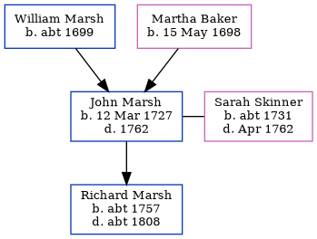

John Marsh 1727 - 1762
[ Home ] | [ Calendar ] | [ Surnames Index ] | [ Errors ] | [ Family History ]The child of William Marsh and Martha Baker, John Marsh, the 5 times great-grandfather of Nigel Horne, was born in Elham, Kent, England on 12 Mar 17271 and married Sarah Skinner (with whom he had 1 child, Richard) in Elham on 12 Nov 1753, which is also where he died in 1762.
Parents
- William was born c. 1699
- Martha was born on 15 May 1698
Children
- Richard was born c. 1757
Citations
- Kent, England, Tyler Index to Parish Registers, 1538-1874 Online publication - Provo, UT, USA: Ancestry.com Operations, Inc., 2010. This collection was indexed by Ancestry World Archives Project contributors.Original data - Frank Watt Tyler. The Tyler Collection. Canterbury, Kent, England: The Institute of Herald
Family Tree
Map
Generated by ged2site. Last updated on Jul 3, 2024
Known Issues
Death date (1762) has no citations
Marriage date (12 Nov 1753) has no citations